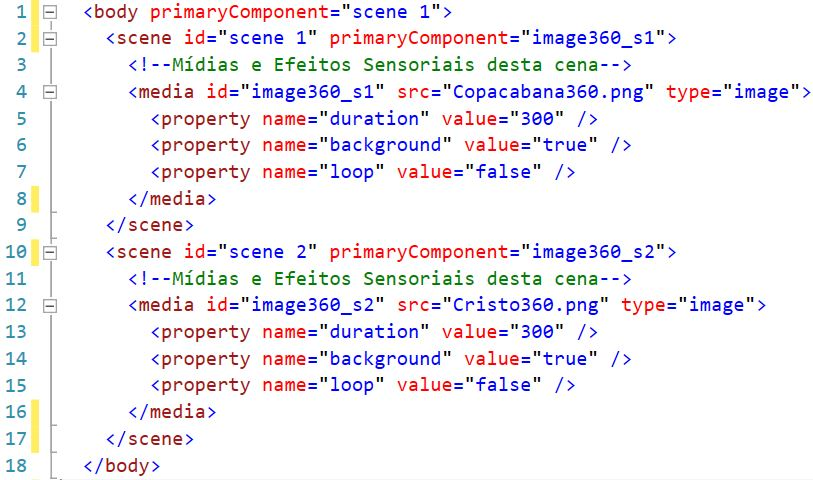

A imagem a baixo mostra um exemplo com cenas em um projeto.
As cenas do projeto são ambientes tridimensionais onde as mídias serão apresentadas, as cenas são independentes umas das outras e servem como um ambiente organizacional e temporal da apresentação.
Para uma cena ser iniciada, é necessário aponta-la no projeto através do atributo primaryComponent da tag body, como na linha 1.
As cenas também possuem atributo obrigatório como o id para identifica-la e opcional o primaryComponent para apontar qual mídia será iniciada primeiramente.